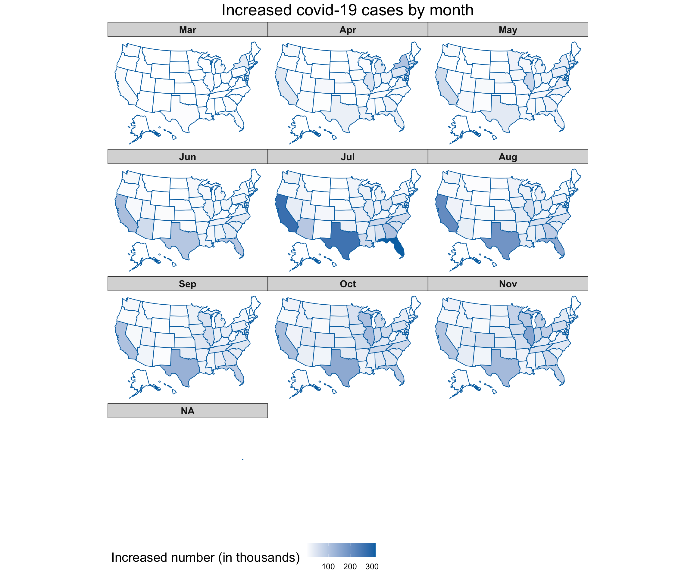
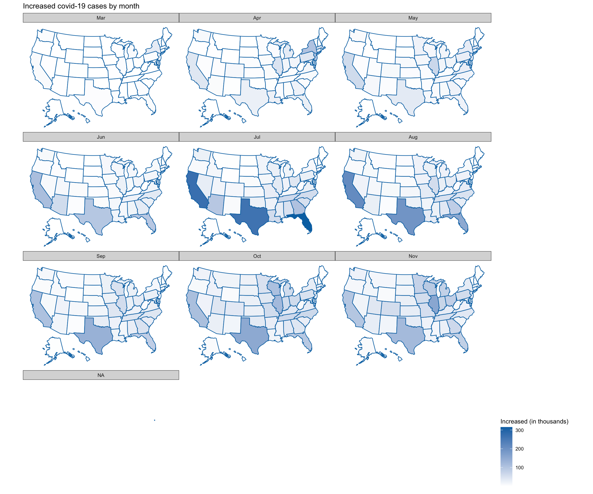

Chapter 4 Missing values
First we can have a quick review of our dataset, we can see clearly that their are many missing values (NA entries) in our dataframe.
## X
## 0
## date
## 0
## state
## 0
## tot_cases
## 0
## new_case
## 0
## tot_death
## 0
## new_death
## 0
## hospital_onset_covid
## 276
## inpatient_beds
## 201
## inpatient_beds_used
## 275
## inpatient_beds_used_covid
## 210
## previous_day_admission_adult_covid_confirmed
## 6073
## previous_day_admission_adult_covid_suspected
## 6214
## previous_day_admission_pediatric_covid_confirmed
## 6478
## previous_day_admission_pediatric_covid_suspected
## 6474
## staffed_adult_icu_bed_occupancy
## 6485
## staffed_icu_adult_patients_confirmed_and_suspected_covid
## 6411
## staffed_icu_adult_patients_confirmed_covid
## 6261
## total_adult_patients_hospitalized_confirmed_and_suspected_covid
## 5936
## total_adult_patients_hospitalized_confirmed_covid
## 5811
## total_pediatric_patients_hospitalized_confirmed_and_suspected_covid
## 6476
## total_pediatric_patients_hospitalized_confirmed_covid
## 6476
## total_staffed_adult_icu_beds
## 6333
## inpatient_beds_utilization
## 275
## percent_of_inpatients_with_covid
## 298
## inpatient_bed_covid_utilization
## 275
## adult_icu_bed_covid_utilization
## 6644
## adult_icu_bed_utilization
## 6637A lot of columns have more than 5,000 missing values.
 This plot provides a specific visualiation of the amount of missing data, showing in black the location of missing values, and also providing information on the overall percentage of missing values overall (in the legend), and in each variable.
From this Most of missing values do not show by random, but they have patterns.

An upset plot from the UpSetR package can be used to visualise the patterns of missingness, or rather the combinations of missingness across cases. To see combinations of missingness and intersections of missingness amongst variables, use the gg_miss_upset function:
6467 cases that those five columns have missing value together 152 adult_icu_bed_occupancy and adult_icu_bed_covid_utilization_NA